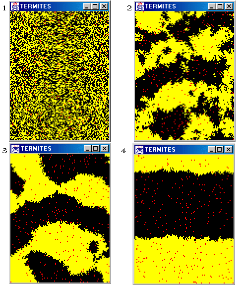

| The "Turtles" simulation Pack | ||
|---|---|---|
| Prev | ||
This simulation is a copy of the StarLogo team's project named Termites.
This example is a transcription of the original. The presence of a chip on a patch is modeled by the patch's current color: black (empty) or yellow (a chip). The termites are red.This project is inspired by the behavior of termites gathering wood chips into piles. The termites follow a set of simple rules. Each termite starts wandering randomly. If it bumps into a wood chip, it picks the chip up, and continues to wander randomly. When it bumps into another wood chip, it finds a nearby empty space and puts its wood chip down. With these simple rules, the wood chips eventually end up in a single pile.
Figure 12. Termites: an illustration of emergence

This simulation and its computation is explained in details in the chapter A step by step example in the TurtleKit Documentation Introduction to TurtleKit.